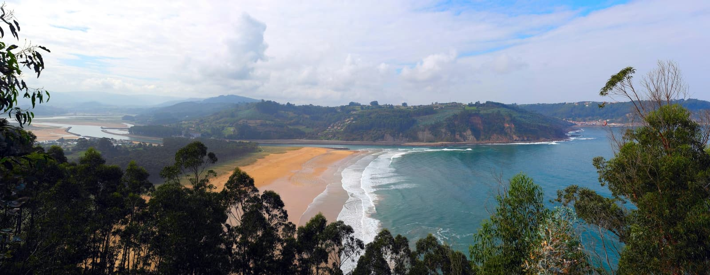

Rodiles
Asturies, Espagne · surf

L’une des plus belles droites d’Espagne, à l’embouchure d’une ria asturienne bordée de pins.
- Lieu
- Asturies, Espagne
- Niveau
- Intermédiaire
- Activités
- surf
- Type d'eau
- Mer / océan
- Coordonnées
- 43.53, -5.39 (position approximative du secteur)
Dangers à connaître
- Courants de la ria.
- Eau fraîche.
Le conseil d'Ocean Buddy
Fonctionne surtout à marée descendante ; cadre superbe entre ria et forêt.
Ouvrir dans Ocean Buddy Télécharger sur l'App Store
Source : Description historique Ocean Buddy · vérification externe en attente.